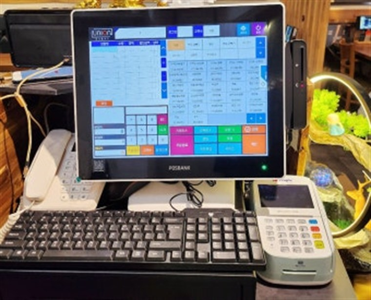

진주 전역에 카드단말기·포스기·키오스크·토스페이결제기·무인자판기를 설치비 무료, 평균 4일 이내 방문 설치해 드립니다.
다양한 매장이 모여 있는 진주 전역에, 빠르고 안정적인 결제 환경을 갖출 수 있도록 H포스가 카드단말기·포스기를 설치해 드립니다. 신규 창업 매장은 가맹 신청부터 단말기 설치까지 한 번에, 기존 매장은 단말기 교체와 모든 카드사 일괄 가맹까지 한 번에 처리합니다.
카드·삼성페이·카카오페이·네이버페이·QR을 한 대로 받을 수 있도록 구성하며, 설치비 무료·평균 4일 이내 방문 설치·24시간 A/S로 진행합니다.
진주 어느 동이든 동 단위로 방문 설치합니다.
진주 전 지역을 동 단위로 방문합니다. 아래 동네 어디든 신청 후 평균 4일 이내에 찾아가 설치해 드립니다.
포스기 설치 — 천전동 포스기 설치 · 성북동 포스기 설치 · 중앙동 포스기 설치 등
카드단말기 설치 — 천전동 카드단말기 설치 · 성북동 카드단말기 설치 · 중앙동 카드단말기 설치 등
매장 환경에 맞춰 유선·무선·이동식·휴대용 카드단말기, 블루투스 단말기, 포스(POS), 토스페이결제기, 무인 키오스크까지 설치하고 관리해 드립니다.
같은 기기를 부르는 이름은 여러 가지입니다. 진주 포스단말기, 진주 카드기, 진주 카드체크기, 진주 카드결제기, 진주 카드리더기, 진주 신용카드단말기, 진주 신용카드결제기 — 어떤 이름으로 검색하셨든 모두 같은 결제 단말기이며, H포스에서 신규 설치와 교체를 모두 진행해 드립니다.
진주 포스단말기 설치 · 진주 카드기 설치 · 진주 카드체크기 설치 등
구매가 부담되시면 렌탈·임대로도 가능합니다. 설치비 없이 월 이용료만으로 시작할 수 있어 신규 창업 매장에서 많이 선택합니다. 진주 포스기 렌탈, 진주 카드단말기 렌탈, 진주 포스기 임대, 진주 카드단말기 임대, 진주 키오스크 렌탈까지 상담해 드리며, 설치 신청과 문의는 전화 한 통이면 됩니다.
진주 포스기 렌탈 · 진주 카드단말기 렌탈 · 진주 포스단말기 렌탈 등
① 음식점·식당 ② 카페·디저트 ③ 편의점·마트 ④ 미용실·네일샵 ⑤ 학원·교습소 ⑥ 병원·약국 ⑦ 헬스장·필라테스 ⑧ 노래방·PC방 ⑨ 무인매장·키오스크 창업 ⑩ 펜션·숙박 등 결제가 발생하는 진주 모든 업종에 업종별 맞춤으로 설치해 드립니다.